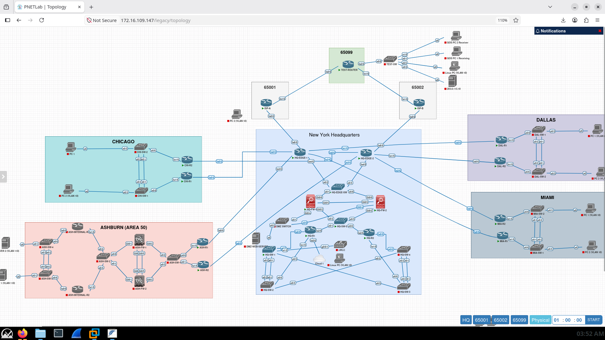

Enterprise Network Architecture
1. High-Level Logical Routing & Failover Architecture

Figure 1: Multi-site logical layout showing dual-ISP eBGP, multi-area OSPF, ASA HA, and HSRP boundaries.
2. Emulated Infrastructure (PNETLab Topology & Port Mapping)

Figure 2: Production emulation running in PNETLab with live interface mapping, vWLC, DMZ, and multi-AS transit routing.
Core Architectural Domains
Detailed breakdown of the 17 engineering modules implemented in this infrastructure.
WAN & Core Routing
Routing & Failover
- Dual eBGP peering to ISP-A & ISP-B with deterministic BGP route maps
- Multi-area OSPF routing (Area 0 Core, Area 50 Ashburn DR, Regional Branches)
- Sub-second HSRP first-hop gateway redundancy with preempt tuning
- BFD integration for rapid link-down neighbor state detection
Zero Trust & Perimeter
Cisco ISE & ASA Firewall
- Cisco ASA High Availability Active/Standby stateful failover pair
- Cisco ISE 802.1X NAC dynamic VLAN assignment (EAP-TLS / PEAP)
- MAC Authentication Bypass (MAB) profiling for VoIP endpoints & printers
- TACACS+ device administration with privilege level 15 command accounting
Hybrid Cloud
Azure Cloud Infrastructure
- Hub-and-Spoke Azure VNet architecture with GatewaySubnet & AppSubnets
- Route-based Site-to-Site IPsec/IKEv2 VPN to Azure Virtual Network Gateway
- Dynamic BGP peering (ASN 65515) exchanging routes between On-Prem & Azure
- Centralized Azure NAT Gateway outbound egress and Network Security Groups
NetDevOps & CI/CD
Automation & Batfish Modeling
- Nautobot Single Source of Truth (SSoT) for IPAM, prefixes, and device roles
- Ansible playbooks for automated multi-device OS upgrades & TFTP validation
- Batfish mathematical modeling in GitHub Actions to catch breaking ACL/route changes
- Automated ITSM Jira Service Management integration via REST APIs
Telemetry & SIEM
Observability & Monitoring
- Splunk SIEM centralized log indexing for ASA, ISE, router syslogs, and Windows events
- Telegraf agent automated deployment collecting SNMPv3 OID metrics
- Grafana dashboards monitoring real-time OSPF neighbors, HSRP states, and IPsec tunnels
- PRTG threshold alerting and automated incident ticket dispatching
Dual-Stack Migration
IPv6 Implementation
- Dual-stack OSPFv3 and BGP IPv6 address families across core and edge
- SLAAC, Stateful DHCPv6, and Stateless DHCPv6 client addressing pools
- Layer 3 Rogue Router Advertisement (RA) mitigation via IPv6 ACLs
- Duplicate Address Detection (DAD) verification documented with PCAPs
ITIL Governance & Change Management
Production Operational Discipline
Every major infrastructure change within Meridian Financial Services followed formal ITIL change management guidelines, including risk assessments, back-out rollback plans, and verified peer review checklists:
- CR-001: HSRP to VRRP Gateway Redundancy Migration
- CR-002: Core & Distribution Layer Automated Cisco IOS Upgrade via Ansible
- CR-003: Plaintext SNMPv2 to Encrypted SNMPv3 Migration
- CR-004: Port-Level 802.1X Access Enforcement with Cisco ISE & AD
- CR-005: PRTG Monitoring Threshold & Notification Escalation